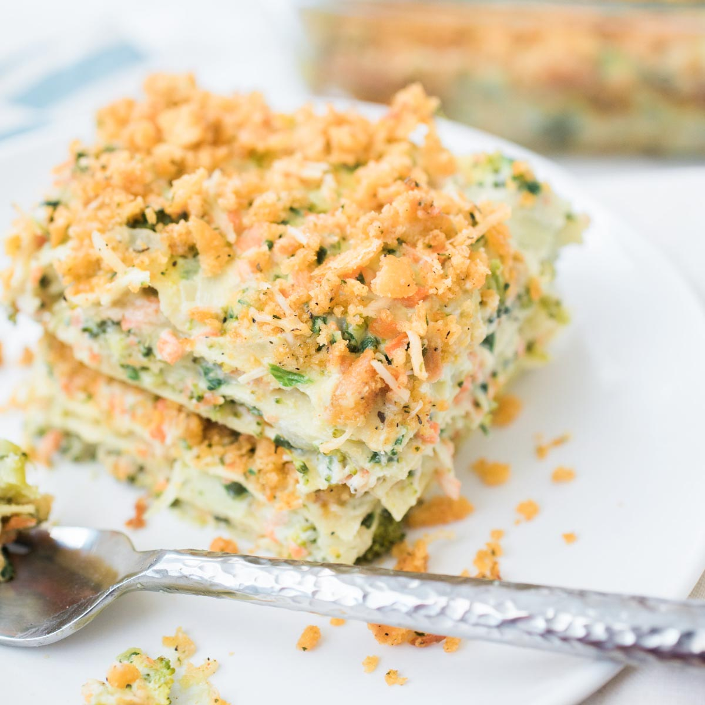

Vegetable Lasagna

Description
This Creamy Vegetable Lasagna is loaded with fresh summer veggies, three types of cheese, and the most delicious cream sauce! A delicious alternative to traditional lasagna….and perfect for summer!
Ingredients
- 2-3 cups mixed vegetables (Broccoli, Carrots, Onions, etc.)
- 1 cup heavy cream
- 1/2 cup parmesan cheese
- 4 cups mozzarella cheese
- 1 package lasagna noodles
- 1 can Ragu Alfredo sauce
- 1 tablespoon italian seasoning
- salt and pepper to taste
- Boil the lasagna noodles according to package instructions. While noodles are cooking. Saute veggies in skillet.
- When veggies are tender add seasonings, alfredo sauce and simmer for 10 min.
- In 9x13 baking dish, layer lasagna noodles, sauce and cheese until it is 3/4 full. Make sure cheese is top layer.
- Bake covered for 35 min. Take foil off and then bake for another 5 min to brown the cheese.